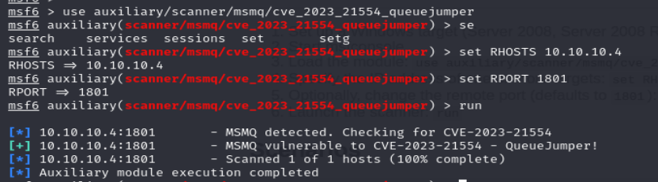

WIN19:
Using metasploit :
were going to check exploits for the Critical vulnerability Microsoft Message Queuing RCE (CVE-2023-21554, QueueJumper)
searching the vulnerability :

checking if it is exploitable :

WIN16,12:
cve-43:

cve-44:

cve-45:

cve-46: